Barker Browser Tutorial
Tab controls
Tab controls area is dividid into 2 rows.
Top row is mainly about in-tab navigation and layout change.
Bottom row displays list of opened tabs.
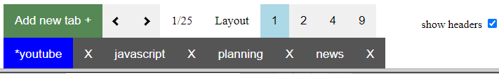
Tab layouts
In layout control area you can change how many browser windows you see on the screen in the actual tab.
On the screenshot below (see red selection) there is active layout 1. That means you see just 1 browser window in this tab so it looks just like other browsers.
In the screenshot you can also see that is possible to select other layouts (2, 4, 9). These values are configurable in preferences.
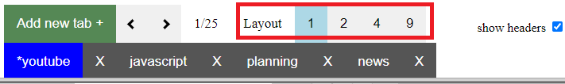
Here you can see various examples of browser usage with different layouts (1, 2 and 4).
Layout 1
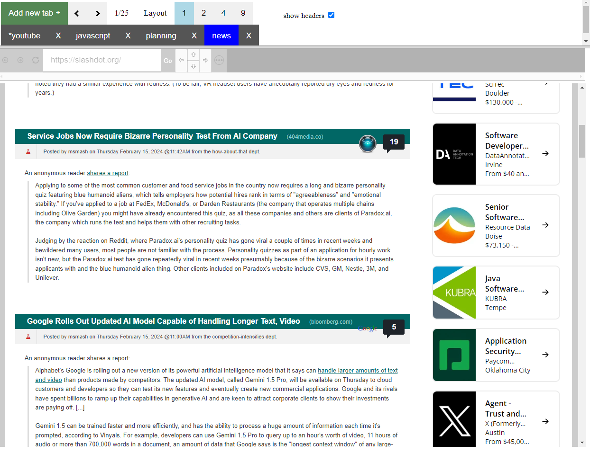
Layout 2
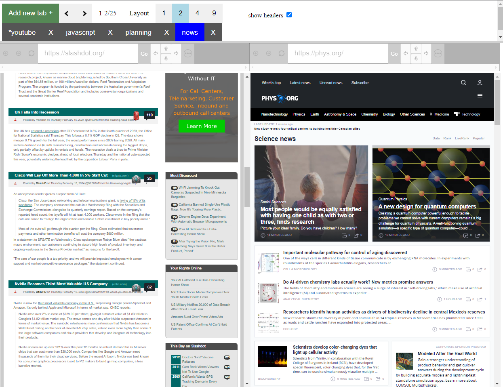
Layout 4
Browser headers
Please note different number of browser windows in each screenshot.
For each browser window there exists one browser header row (see red selection on screenshot below).
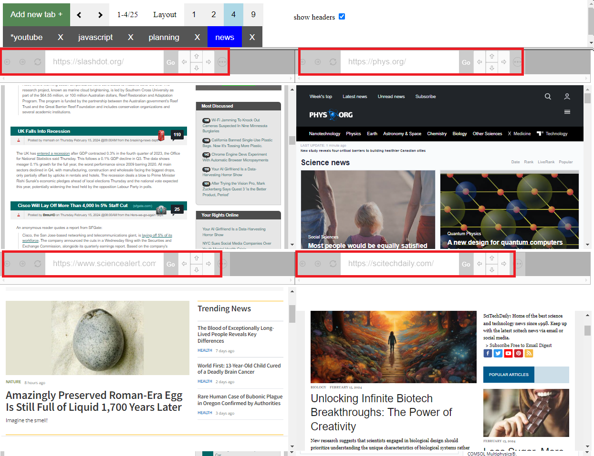
In browser header you can control navigation of browser with buttons (Back, Forward, Reload) and enter target address.
There are also some other elements in browser header like indication if this browser window is actually muted or arrows to move browser window to different position.
Additionaly browser header can be hidden which can be useful in bigger layouts for better overview, see screenshot below (compare it with previous screenshot).
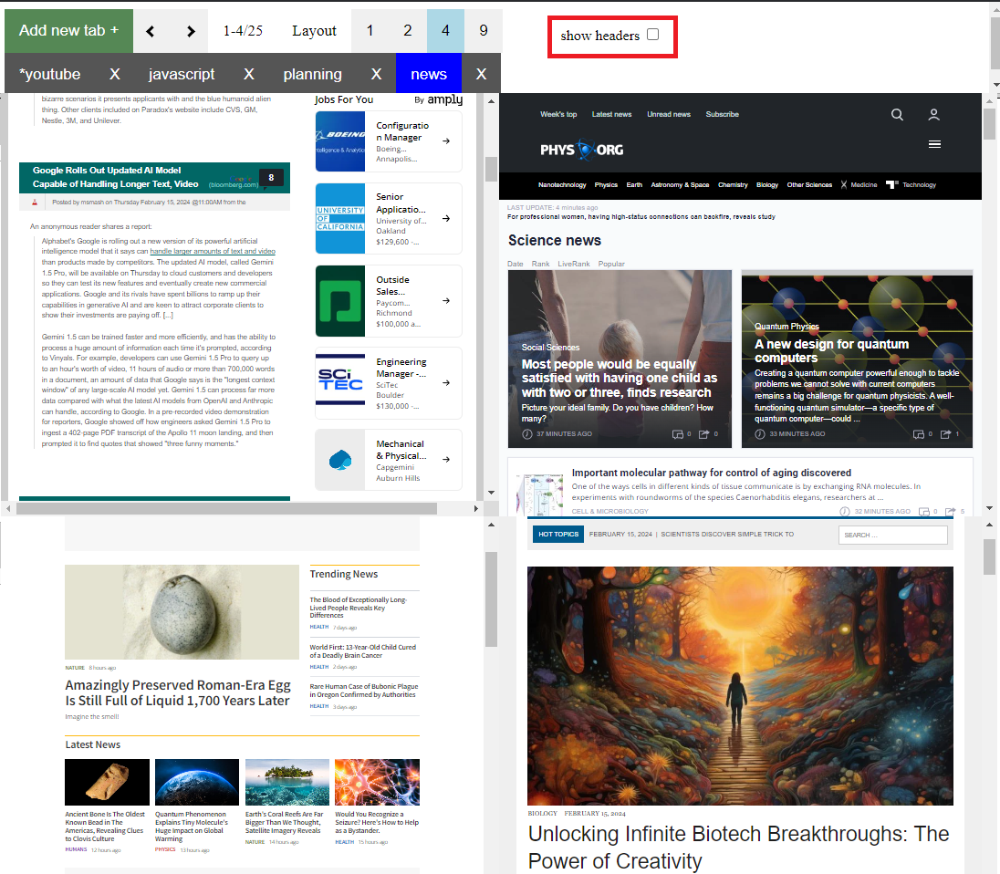
In this "view mode" you cannot navigate to different addresses as you don't see addressbar. See red selection in topbar, there is a checkbox which turns on and off displaying of browser headers.
Browser header actions
Header area consists of 3 parts visually divided by addressbar. Left of addressbar there are buttons Back, Forward and Reload followed by the addressbar itself.
Additionaly there can be indication of muted window or other indications.
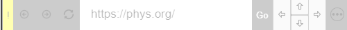
On the right side of addressbar there is Go button for address confirmation followed by shifting arrows and button which opens context menu for more actions. By clicking on this buttons you can clear the page, mute window, save HTML, print page, bookmark page, open developer console specifically for this page and scrape web. Clicking on arrows moves window position within the tab.
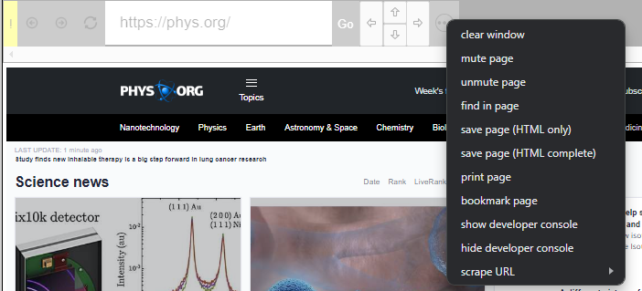
In-tab navigation
You have probably already noticed that tab contains more browser windows. If you change layouts, some windows become not visible beyond actual layout visibility. Default setting is 25 browser windows per tab (can be configured in preferences). To navigate through all windows, there are navigation arrows in topbar, see screenshot below with red selection area.
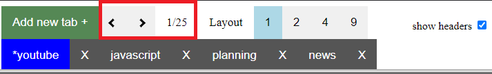
In next picture you can see transition from windows 1-2 to windows 3-4 after click on right arrow.
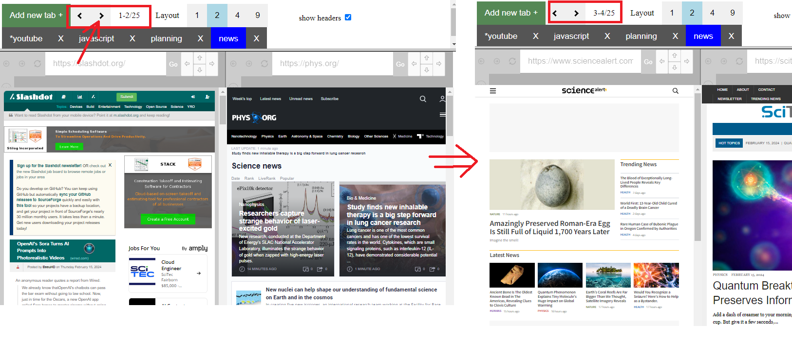
Left sidebar
Left sidebar is a storage for permanently visible websites. Although there is support for 25 browser windows in this sidebar, it does not make really sense to display more than 1 or 2 webs there. Therefore left sidebar offers only layouts 1-3. See image below how it looks (red selection).
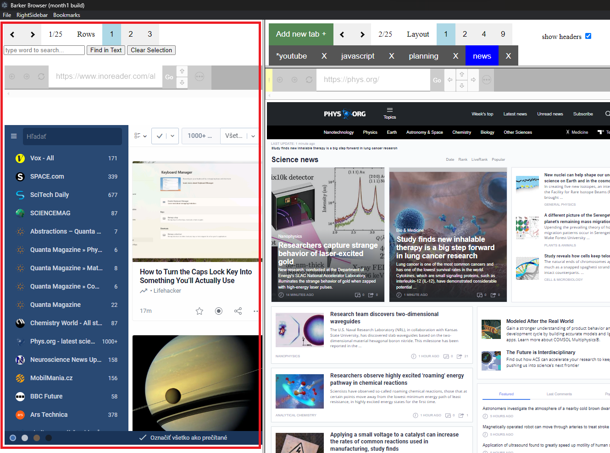
You can use left sidebar to watch news, weather or sport results, whatever makes sense for you while you continue in browsing in main area.
Right sidebar
Right sidebar purpose is to display history and technical information about page in form of developer console.
History comes in 2 forms - either history of browsed individual pages or scraped web.
Developer console can be activated by clicking on context menu option in Browser header More actions button.
Please remember that such developer console is valid only for page which invoked this console and does not contain information about other pages from different browser windows.
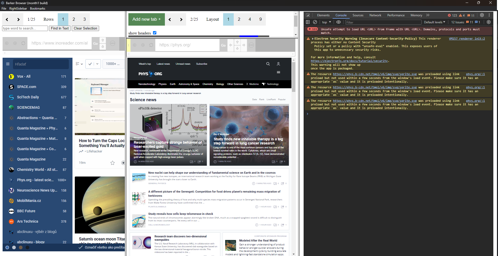
History of individually browsed pages can be activated by clicking on main menu option (RightSideBar -> Show browsing history). Then you will see a page with result from today with an option to switch different dates and also search in text of all pages.
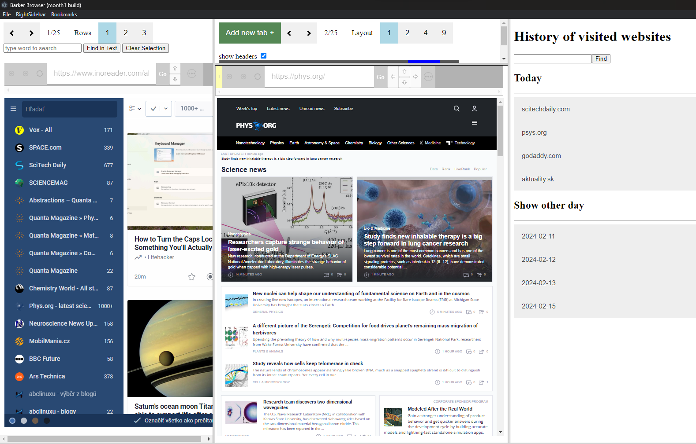
Third possibility is to display downloaded webs (downloaded by using More actions->Scrape web in Browser header).
After activating it from Main Menu (RightSidebar->Show downloaded webs) the list of downloaded webs will be displayed in right sidebar.
Downloaded webs are downloaded only in minimal form, saving primarily text and links but not other elements so pages will look different but will store all text information.
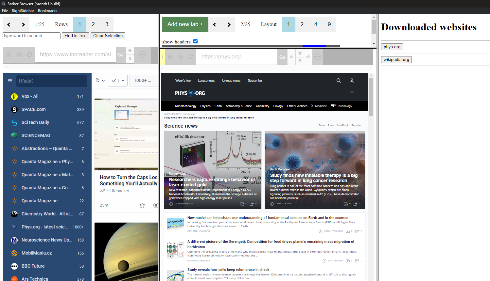
And finally it is possible to display this tutorial in right sidebar :)
Have fun using this application.